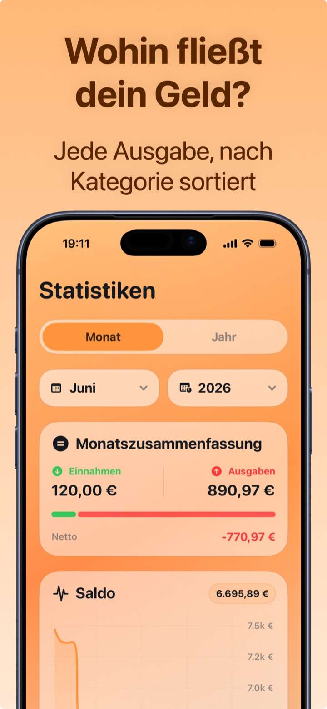

Jeden Monat Geld sparen: 7 praktische Schritte
Sparen heißt nicht, auf alles zu verzichten: Es heißt, nicht mehr für Dinge zu zahlen, deren Bezahlung dir gar nicht mehr auffällt. Diese 7 Schritte funktionieren, weil sie die unsichtbaren Abflüsse angreifen — nicht deinen Morgenkaffee.
1. Finde heraus, wohin das Geld geht (eine Woche reicht)
Du kannst nicht kürzen, was du nicht siehst. Tracke jede Ausgabe mindestens eine Woche lang: In den meisten Fällen tauchen sofort 2-3 Posten auf, von deren Gewicht du nichts wusstest. Es ist der Schritt, der alle anderen möglich macht.
2. Mach den Abo-Check
Streaming, Apps, Fitnessstudio, Cloud: Die meisten haben 3-5 aktive Abos, und fast immer wird mindestens eines nicht mehr genutzt. Vergessene 12,99 € im Monat sind 156 € im Jahr. Hier der komplette Abo-Ratgeber.
3. Zahl dich zuerst
Überweise am Gehaltstag sofort einen festen Betrag (auch nur 50 €) auf ein separates Konto. Sparen mit dem, „was übrig bleibt", funktioniert nicht: Am Monatsende bleibt nie etwas übrig. Automatisieren und vergessen.
4. Die 24-Stunden-Regel
Für jeden nicht notwendigen Kauf über 30-50 €: Warte einen Tag. Wenn du ihn am nächsten Tag noch willst, kauf ihn. Meistens ist der Impuls vorbei — und der stehengelassene Warenkorb ist reines Sparen.
5. Gib der Kategorie, die ausreißt, ein Budget
Du musst nicht alles auf Diät setzen: Schau in die Statistiken, finde die Kategorie außer Kontrolle (oft Essen gehen oder Online-Shopping) und setze nur dort ein Limit. Ein Ziel auf einmal hält; zehn gleichzeitig nicht.
6. Achtung vor verkleideten Jahresausgaben
Versicherungen, Kfz-Steuer, Domain- und App-Verlängerungen: Sie kommen einmal im Jahr und sprengen den Monat. Erfasse sie als jährlich wiederkehrend, damit du sie kommen siehst, und lege jeden Monat 1/12 zurück.
7. Prüfe die Zahlen jeden Sonntag (2 Minuten)
Sparen ist eine Feedbackschleife: ausgeben → messen → korrigieren. Zwei Minuten pro Woche vor den Statistiken sind mehr wert als jeder Neujahrsvorsatz.

Jeden Monat sparen mit Crena
- Lade Crena und tracke eine Woche lang alles: zwei Sekunden pro Ausgabe reichen, auch über das Widget.
- Trage deine Abos bei den Wiederkehrenden ein: Die gesamte Monatsbelastung erscheint sofort, schon berechnet.
- Lege ein Monatsbudget fest: deine Durchschnittsausgaben minus 10 %.
- Prüfe auf dem Startbildschirm den verfügbaren Tagesdurchschnitt: Das ist die Zahl, die Shopping-Tage im Zaum hält.
- Jeden Sonntag 2 Minuten in den Statistiken: Finde die Kategorie, die ausreißt, und korrigiere in der Woche danach.
Häufige Fragen
Wie viel sollte ich pro Monat sparen können?
Was ist die häufigste unsichtbare Ausgabe?
Brauche ich eine App oder reicht Willenskraft?
Probiere Crena kostenlos
Ausgaben in zwei Sekunden, Monatsbudget und klare Statistiken. Ohne Registrierung und ohne Kontoverknüpfung.
Laden imApp Store